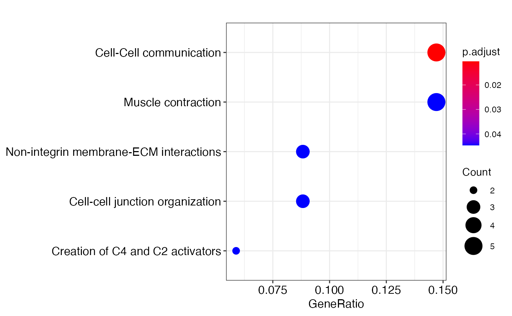

R/Utilities.R
annotate_clusters.Rdoften we need to label clusters with unique biological characters. One of the common approach to annotate a cluster is to perform functional enrichment analysis. The annotate implements ReactomePA and clusterProfiler for this analysis type in R. The function require installation of several databases as described below.
annotate_clusters( DEgeneList, pvalueCutoff = 0.05, gene_symbol = TRUE, species = "human" )
| DEgeneList | is a vector of gene symbols, convertable to ENTREZID |
|---|---|
| pvalueCutoff | is a numeric of the cutoff p value |
| gene_symbol | logical of whether the geneList is a gene symbol |
| species | is the selection of 'human' or 'mouse', default to 'human' genes |
write enrichment test output to a file and an enrichment test object for plotting
genes <-training_gene_sample genes <-genes$Merged_unique[seq_len(50)] enrichment_test <- annotate_clusters(genes, pvalueCutoff=0.05, gene_symbol=TRUE, species = 'human')#>#> #> #>#>#>#>#>#> Warning: 8% of input gene IDs are fail to map...#>#>#>#>